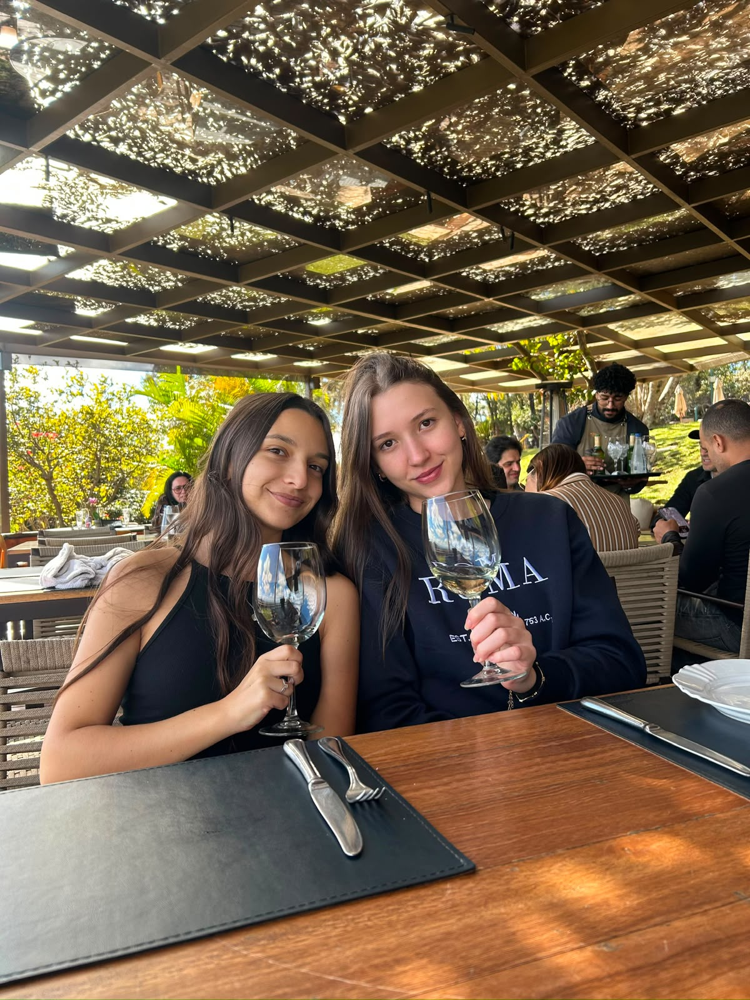
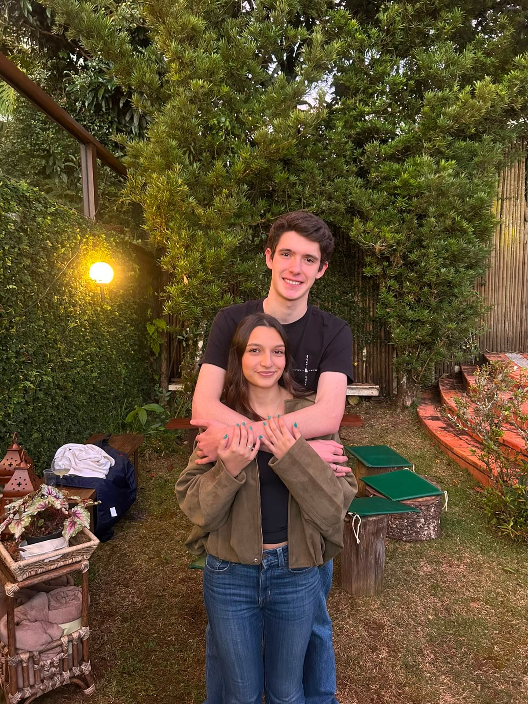
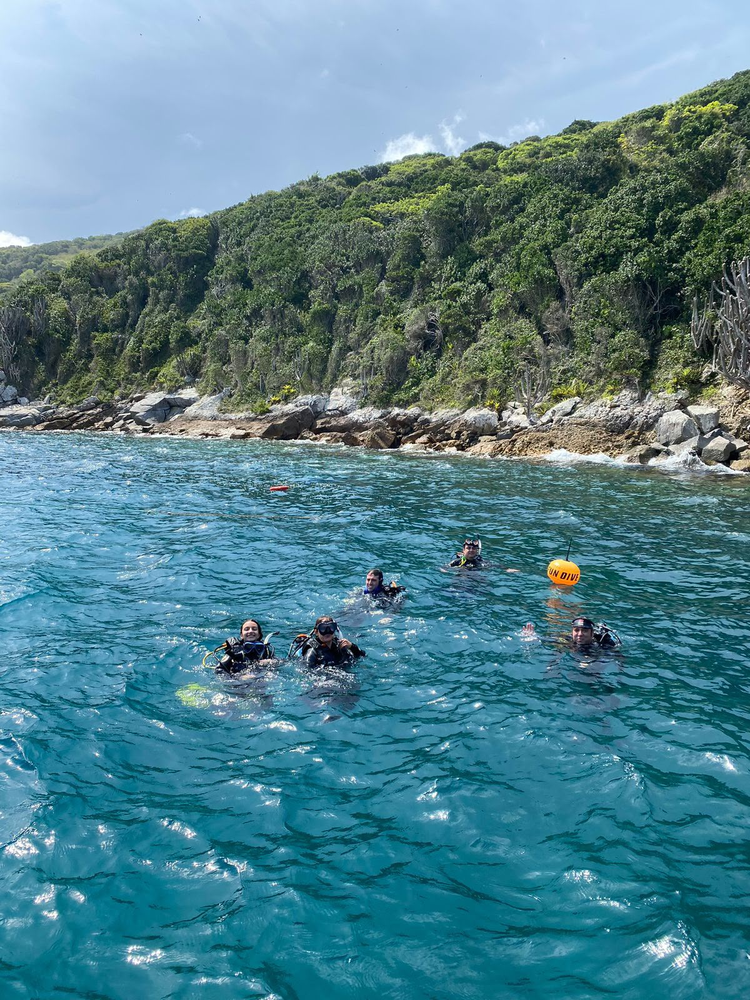

Sobre Mim
Formação:
- Estudei no Colégio Santo Antônio em Belo Horizonte/MG.
- Fiz um intercâmbio de 10 dias para a Irlanda, onde estudei um pouco sobre empreendedorismo e inovação na Trinity College Dublin.
- Fiz outro intercâmbio de 20 dias no Canadá, onde estudei sobre engenharia na University of British Columbia.
- Participei de muitas olimpíadas de matematica, fisica e biologia durante o ensino médio, inclusive ganhando medalha de prata na WMTC de Pequim, em 2019.
- Atualmente estou cursando Engenharia Elétrica na UFMG.
- Estou no programa de trainee da ijunior.
Hobbies:
- Adoro assistir filmes e séries, sair com amigas, namorado, gosto de cozinhar e jogar tênis.


Curiosidades:
- Sonho em viajar para muitos lugares do mundo e adoro mergulhar com cilindrto.

Meus Projetos
- Fiz um protótipo de um site para a Orguel no projeto da ENG-200, premiado como o melhor projeto desse case em 2026.
- Desenvolvi um jogo de asteroides
- Criei um site pessoal como projeto para a ijunior
Contato
Email: analuisa.milhomem@gmail.com
Telefone: (31) 98340-4106
LinkedIn: Ana Luisa Milhomem Martins